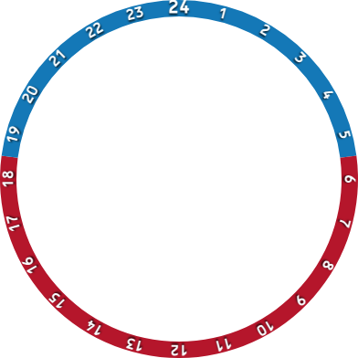

Worldwide chart styles
Generated chart backgrounds let one familiar style cover any part of the world, including US sectional, TPC, ICAO-style, terrain, and overlay-focused views.
Unlimited, never-outdated MSFS 2024 EFB charts with worldwide VFR styles, IFR procedures, route timing, terrain profiles, drawing tools, rulers, and cockpit-style utilities.
TemplateApp plus video transcript
Generated chart backgrounds let one familiar style cover any part of the world, including US sectional, TPC, ICAO-style, terrain, and overlay-focused views.
Dedicated IFR base layer, procedure lists, deep links, generated plates, final approach labels, missed approach routing, holds, MSA display, and terrain-aware legend placement.
Turbo raster base layers, Google Terrain and OpenStreetMap options, server-rendered transparent overlays, retrying tile requests, and merged overlay delivery.
Airport, VOR, NDB, FIX, airspace, and facility lookup ordered by aircraft proximity, with fast compact indexes for the legacy simulator browser.
Click route legs to add waypoints, drag them into place, view distance and magnetic course per leg, then import, export, paste, reverse, rename, or reorder the plan.
Built-in number cruncher, analog chronograph, calculator watch, Esso flight computer, drawing, eraser, undo, JSON import/export, and physical or detached rulers.
Use in Game
Infinity Charts keeps map rendering practical for Microsoft Flight Simulator's embedded browser. The app favors OpenLayers, canvas, raster layers, generated PNG assets, and local server endpoints over WebGL-only paths.
Separate Chrome preview and MSFS runtime behavior.
Bundled EFB app and resizable toolbar panel package.
Local terrain server with health diagnostics and data update workflow.
Built-in MSFS LIDO chart integration path with generated IFR plates as fallback.
CoherentGT-safe rendering with OpenLayers, canvas, raster layers, and generated PNG assets.


Operational detail
Default zoom, follow mode, hidden aircraft mode, aircraft heading, integer wheel zoom, map rotation, route overlays, click info, facility markers, airways, obstacles, and declutter behavior live in one map surface.
IFR mode switches base layers, hides normal route overlays, renders selected procedures, keeps labels clear of route geometry, and supports URL-loaded airport and procedure state.
The server packages runtime assets, renders overlay PNG tiles, exposes health diagnostics, hosts update data, and keeps large generated chunks outside the simulator package.
Release output includes EFB, toolbar, and terrain server artifacts, plus an Electron launcher that discovers the MSFS Community folder and updates existing components.
GitHub Pages ready
Get Infinity Charts through Patreon. This website is plain static HTML, CSS, JavaScript, and copied image assets, ready for GitHub Pages deployment.
Known scope
Worldwide generated chart styles, VFR route editing, IFR generated plates, terrain profile, MEF and MORA, route timing ticks, map overlays, search, drawing, rulers, chronograph, calculator, flight computer, FPL import/export.
Flight-plan filing, official weather briefings, TFR and NOTAM workflow, ADS-B, aircraft performance planning, weight and balance, and logbook workflows remain outside current requirements.